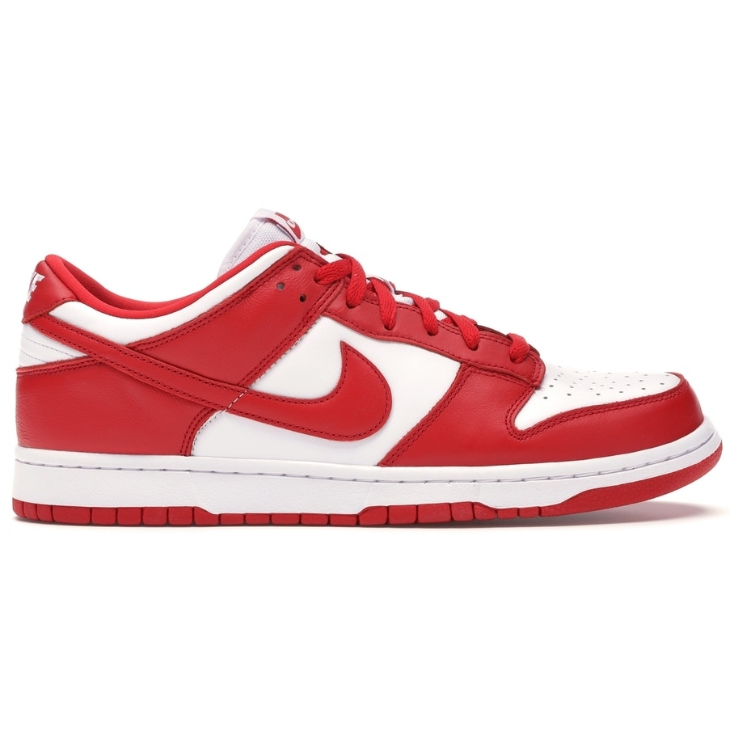

NIKE DUNK UNIVERSITY RED
"LITTLE RED"
SB Dunk Low
O design deu nas vistas em 1985, altura em que foram lançadas num pack de produtos com coordenação de cores para programas universitários.
R$ 2.435,89 ADICIONAR AO CARRINHO

O design deu nas vistas em 1985, altura em que foram lançadas num pack de produtos com coordenação de cores para programas universitários.
R$ 2.435,89 ADICIONAR AO CARRINHO